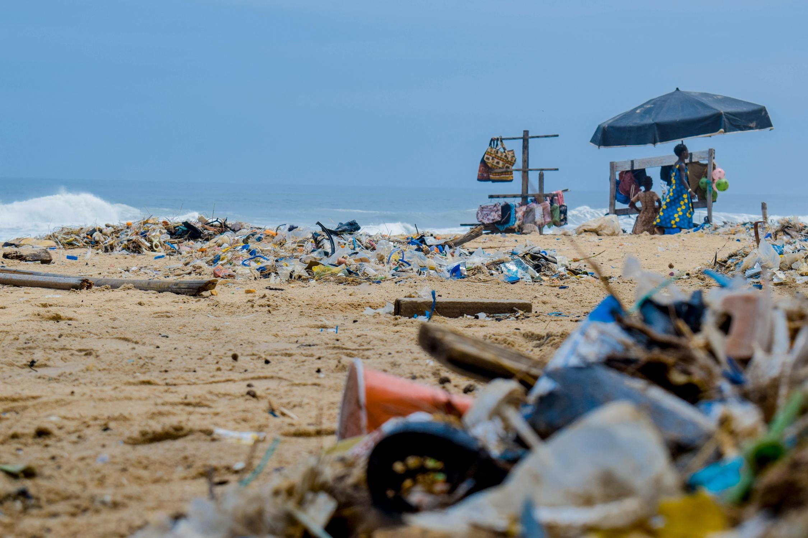

CASE STUDIES
1. The Great Pacific Garbage Patch

This massive collection of plastic waste spans over 1.6 million square kilometers, highlighting the severity of marine plastic pollution. Ocean currents have trapped this debris, causing harm to countless marine animals.
2. Microplastics in Food and Water

Microplastics, tiny particles of plastic, are now found in human food and drinking water worldwide. These particles pose serious health risks, as they accumulate in our bodies and may lead to long-term health issues.
3. Urban Plastic Pollution in India

In India's urban areas, plastic pollution is a visible problem. Ineffective waste management has led to severe clogging in drainage systems, frequent floods, and adverse impacts on public health. The government is encouraging cleaner practices through initiatives and public awareness programs.
4. Plastic Pollution's Effects on Biodiversity

Plastic waste disrupts natural habitats and endangers wildlife. Birds, fish, and even larger mammals often mistake plastic for food, leading to fatal consequences. Many species face population declines due to plastic ingestion or entanglement.